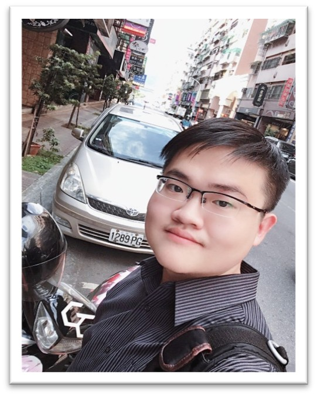
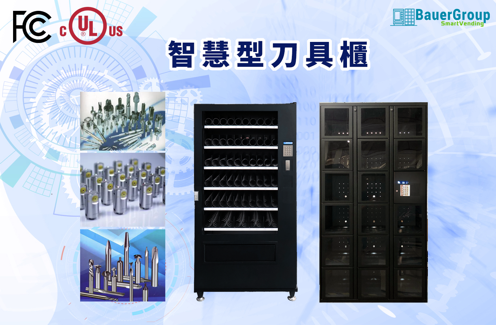
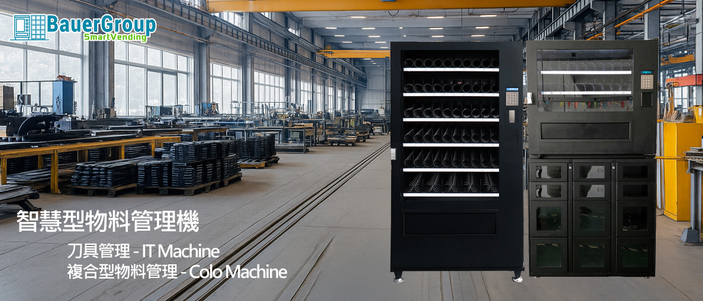
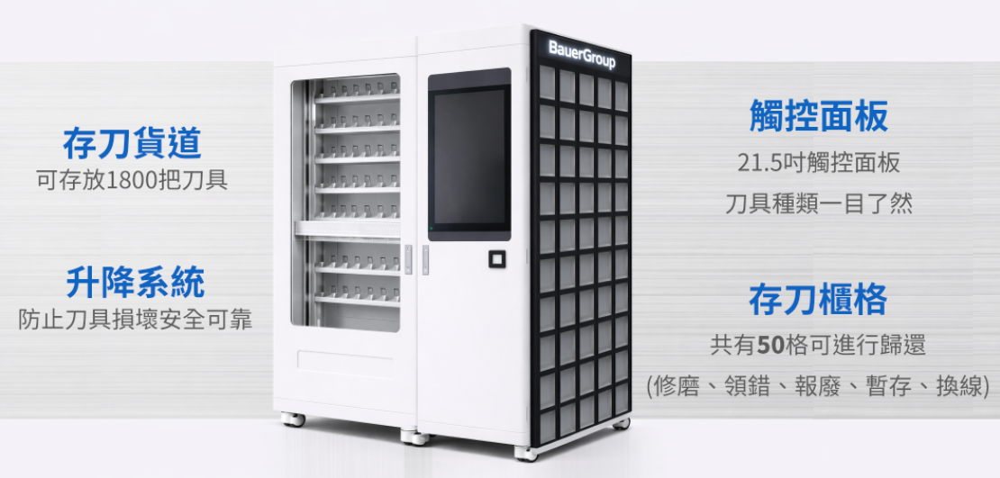
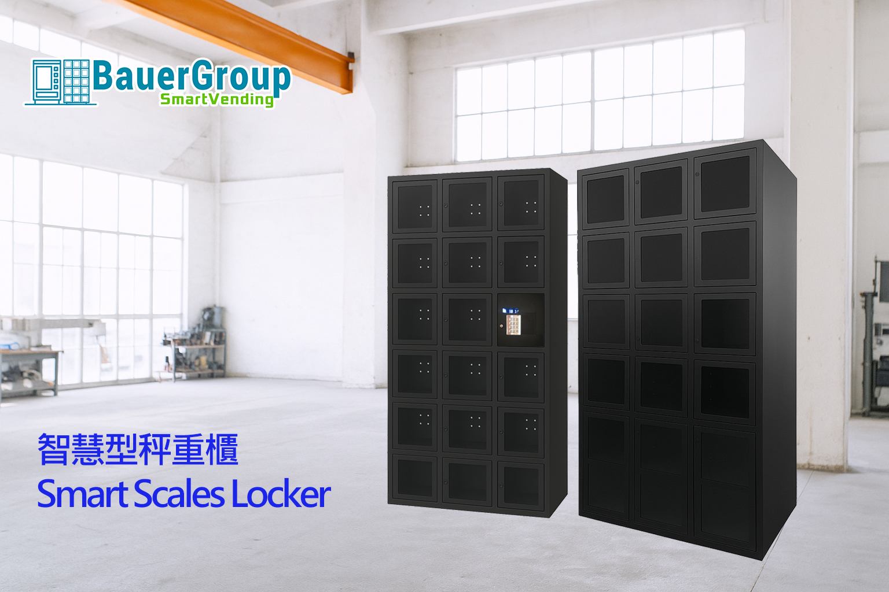

🔎
客製化物料管理需求評估
盤點企業現況、痛點與導入限制，建立更貼近現場的改善方向。
透過智慧化領料、自動化管控與數據分析，協助企業即時掌握耗材流向、降低浪費與缺料風險，打造更精準、更透明、更高效的物料管理流程。
我是翁秉達 Brian Weng，目前任職於包爾科技股份有限公司，擔任系統分析師，擁有 6 年跨領域產業與技術實務經驗。職涯橫跨系統分析、全端工程、產品驗證、國際認證與數位內容開發。
我相信，好的系統不只是解決問題，更應創造可持續擴展的價值。以專業、創新與可靠態度，協助企業打造智慧化物料管理解決方案。
流程自動化、庫存追蹤、數據決策。
工具管理、資產追蹤與內訓實務。

AI 物料管理顧問 / 系統分析師
全端工程、系統分析、產品驗證的完整實務能力。
UL、FCC、CE、KC 等多國法規認證經驗。
工程邏輯、流程設計、可執行規劃轉化。
製造現場痛點、流程改善、數據驅動決策。
以企業實際營運需求為核心，協助企業從傳統物料管理模式，逐步升級為可數據化、可追蹤、可預測的智慧管理流程。
盤點企業現況、痛點與導入限制，建立更貼近現場的改善方向。
釐清耗材流向、領料節點與管理漏洞，找出可量化改善空間。
將紙本、人工、分散紀錄轉為可追蹤的自動化管理流程。
透過資料分析辨識異常消耗、重複領用與高風險耗材項目。
將歷史消耗資料轉化為補貨、庫存與採購決策依據。
建立企業可累積、可查詢、可傳承的內部管理知識系統。
協助企業規劃 AI 角色、資料流程與內部導入能力。
把模糊需求變成可執行規格，降低 AI 導入失敗與溝通成本。
AI 導入的關鍵不是追逐技術，而是讓企業能用更少的人力、更清楚的資料、更精準的決策，持續改善物料管理效率。
透過實際的專案參與與內部培訓經驗，不斷精進技術能力、業務理解與團隊協作。這些場景記錄了 AI 物料管理解決方案如何落地製造現場。





涵蓋系統分析、工程開發、產品驗證與教育培訓等完整領域
主持 UL、FCC、CE、KC 等多國法規認證工作
深入製造現場，將複雜流程轉化為可執行的智慧解決方案
以下以案例型情境呈現，不虛構具名客戶；重點在於展示企業常見問題、可行解法與預期效益。
問題情境：耗材領用依賴人工登記，現場常出現紀錄不完整、責任不清與重複領用。
解決方式：重新設計領料流程，導入身份辨識、領用紀錄與異常消耗追蹤。
預期效益：提高領料透明度，降低耗材浪費與管理追查成本。
方法：流程盤點、資料欄位設計、異常規則定義。
問題情境：工具與耗材使用資料分散，主管難以判斷實際使用量與異常消耗來源。
解決方式：整合領用資料，建立部門、品項、人員與時間維度分析。
預期效益：讓管理者掌握消耗趨勢，支援採購與管理改善。
方法：資料清理、指標設計、視覺化儀表板。
問題情境：補貨依賴經驗判斷，容易造成缺料、呆滯庫存或重複採購。
解決方式：根據歷史領用、季節性、工作量與安全庫存建立預測邏輯。
預期效益：提升補貨準確度，降低庫存壓力與停工風險。
方法：特徵工程、預測模型、補貨建議規則。
技術觀點不只是分享知識，而是協助企業理解 AI、資料分析與流程自動化如何真正進入現場管理。
從耗材流向、領用紀錄到庫存預測，AI 能協助企業把現場經驗轉化為可分析的管理資產。
流程自動化的核心不是取代人，而是減少重複工作、降低錯誤，讓管理者看見真正的問題。
當企業能預測未來需求，就能降低缺料、重複採購與安全庫存過高所帶來的成本壓力。
我們提供完整的工具管理與資產追蹤解決方案，協助企業從人工控管升級為自動化、可視化的智慧系統。
從人工控管到自動化管理的完整升級
在多數製造現場中，刀具管理往往被視為日常作業的一部分，但實際上，它直接影響著生產效率、加工品質與整體成本控制。
當刀具無法即時追蹤、庫存數據不準確、壽命管理依賴經驗時，不僅會造成不必要的浪費，更可能導致停機、延誤交期甚至工件報廢。
透過系統化的刀具管理解決方案，企業可以將原本分散的流程整合為可視化、可控管的管理機制，進一步提升整體營運效率。
智慧工具櫃完整解決方案
智慧工具櫃解決工具遺失、責任不清與人工盤點失控問題。
透過智慧工具櫃與工具櫃管理系統整合，建立完整的工具追蹤系統（Tool Management System），實現工具借還自動化、RFID 工具管理與即時庫存控管。
協助製造業落實數據化工具管理，提升效率、降低成本、強化管理透明度。
無線射頻識別技術應用
透過 RFID（無線射頻識別）技術，自動追蹤工具、設備與物料流動。
打造即時可視化、自動化與可追溯的資產管理系統，協助製造業提升效率、降低成本並強化管理透明度。
實現工具全生命週期追蹤、智慧庫存管理與數據驅動決策。
在我們的社群平台上追蹤最新動態、技術分享與行業洞察
填寫簡單的需求表單，讓我更了解你的企業挑戰，我們將快速評估並提供客製化的解決方案建議。
我們重視你的隱私。所有資訊將加密保存，僅用於評估你的需求。
如果你的企業正在面臨耗材浪費、領料流程混亂、庫存不準或缺乏數據分析能力，現在就是導入智慧化管理的最佳時機。